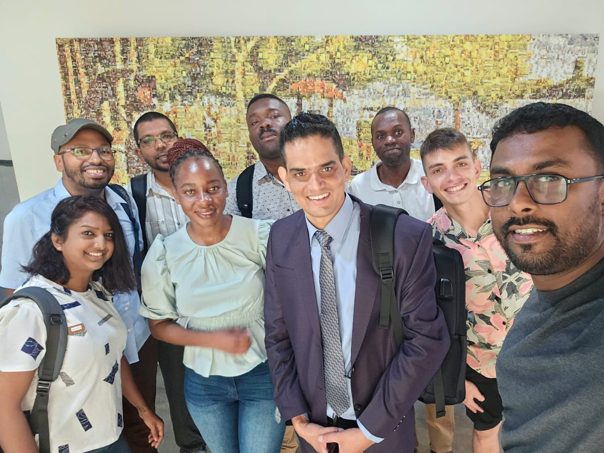

Expanding Horizons: My Journey of Learning with the WCO BACUDA Scholarship Programme

I’m excited to update you on my ongoing journey through the WCO BACUDA Scholarship Programme, which commenced on September 4, 2023. As we delve deeper into this program, I’ve been gaining valuable insights and knowledge, and I can’t wait to share some highlights with you. This program comprises 12 globally selected participants and is hosted by Sungkyunkwan University (SKKU).
Inspiring Opening Ceremony:
The opening ceremony set the stage for what promises to be an exciting journey. We were welcomed by esteemed leaders in the field, including Dr. Taeil KANG, Director of the Capacity Building Directorate at the WCO, Dr. Ji Beom Yoo, President of SKKU, Professor Jong Seo Chai of SKKU, and Mr. Chul Hoon Lee, Head of the International Cooperation Division of the Korea Customs Service. Their words of encouragement have fueled our passion for learning and applying data analytics in the Customs domain.
A Dynamic Learning Experience:
The WCO BACUDA Scholarship Programme is proving to be a dynamic and enriching learning experience. Alongside eleven other Customs officials from diverse regions, I am actively engaged in expanding my understanding of data analytics and its profound impact on Customs operations. As a data analyst, I have been working with limited knowledge, and this program will expand my expertise into new areas of modern AI, such as Deep Learning, Blockchain technology, and network analysis.
Exploring Cutting-Edge Topics:
Our curriculum is a treasure trove of knowledge, covering a wide range of data analytics topics, from the basics to advanced concepts. We’re diving into areas like Big Data Analytics, Machine Learning, Blockchain, and the latest algorithms developed by the BACUDA expert group. These topics are opening new horizons for me and my fellow participants. Hands-on practice with the UNIPASS system expert and the Big Data Academy will add even more excitement and learning.
The Group Project Challenge :
One of the most thrilling aspects of this program is our group project challenge. Learning is one thing, but applying learning in the real field is another thing. Over the course of five months, along with theoretical learning, we will develop AI algorithms to address the specific challenges faced by our Customs administrations. It’s a hands-on opportunity to apply what we’ve learned and drive meaningful change.
Building a Global Network:
Being part of a diverse cohort from countries such as Argentina, Bangladesh, Brazil, Ghana, Maldives, Mauritius, Mongolia, Namibia, Nepal, Sri Lanka, Zimbabwe, and Madagascar has been eye-opening. We’re not only learning from experts but also from each other, exchanging insights and perspectives from around the world.

As I continue this incredible journey of learning and growth, I want to express my profound gratitude for the unwavering support I’ve received from Nepal Customs, WCO, and CCF Korea for their generous funding, without which this opportunity would not have been possible, as well as my cherished friends and family who have been my pillars of strength throughout. I eagerly anticipate sharing more profound insights and transformative experiences as I progress further in this enriching program. Lastly, I extend my heartfelt appreciation to Professor Mitra GHERGHEREHCHI, and her dedicated team for their remarkable coordination and warm hospitality. As we embark on the next phase of this journey after completing our first week, it is evident that the professors’ approachability, their vast knowledge in the realm of data science, the enticing curriculum, and the serene atmosphere of SKKU will undoubtedly propel us towards new heights of knowledge and accomplishment. Many exciting opportunities await on this path of discovery, and I am truly grateful for the chance to be a part of it.
Releted news on WCO website: Opening of the Second WCO BACUDA Scholarship Programme at Sung Kyun Kwan University (SKKU)
Mohan Kumar Pudasaini
Data Analyst||Risk Analyst
Passionate about utilizing data to uncover valuable insights and drive actionable outcomes.